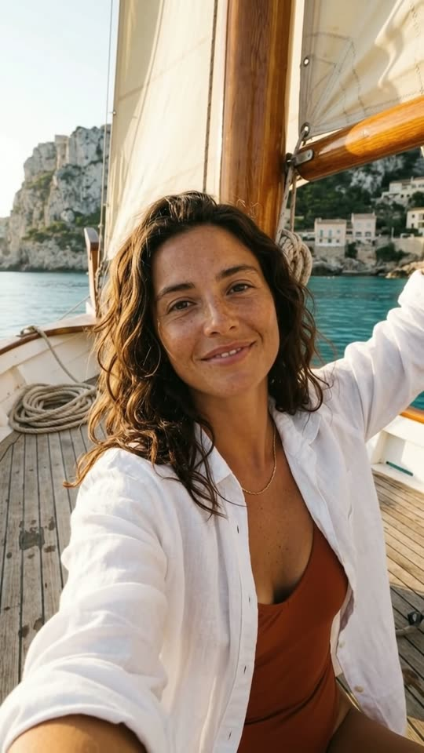
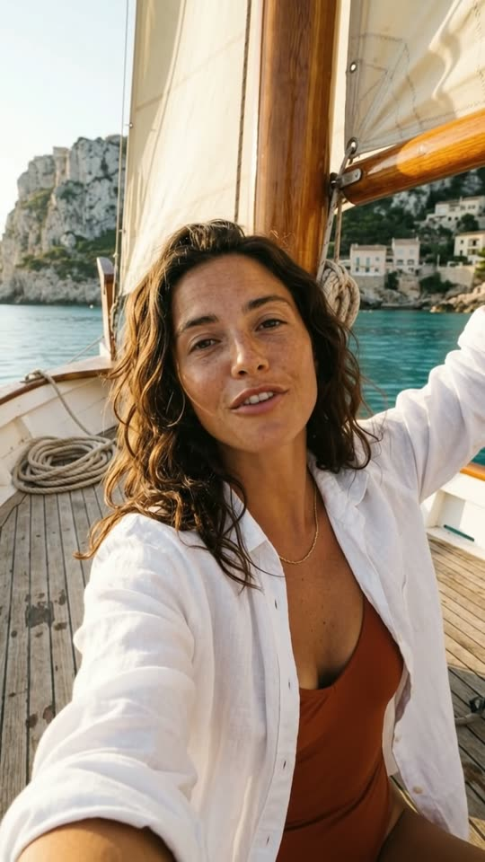
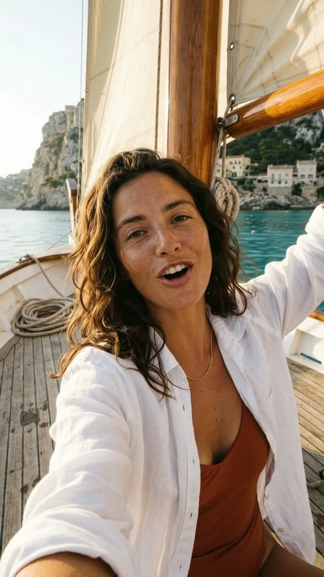
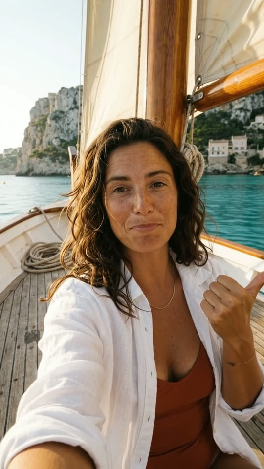
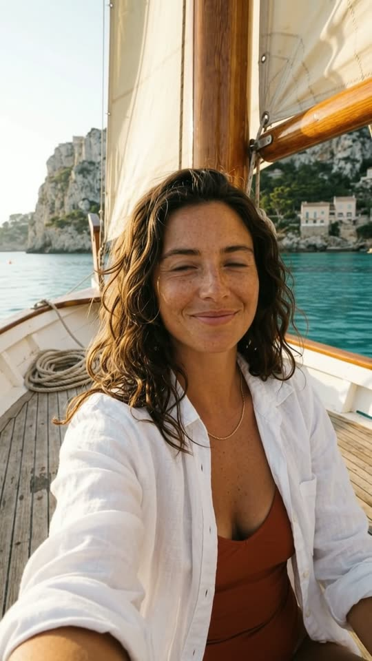

Free prompt pack · all of it
Three clips.Zero dollars.
No camera, no crew, no budget. This whole video is three 10-second clips from Google Flow, which gives you 50 free credits a day. A 10-second clip costs 15, so one day covers all three.
Here's every prompt, ready to copy. Pull the rope on each step to hoist the sail and read the prompt.
Start with the brief
Don't ask for a prompt. Ask for all of it. Paste this into Claude and swap in your idea. It sets out the blocks, the timing and the rules, so what comes back is ready for Flow.
Watch out
The rule that matters most: repeat the shared blocks word for word. The model forgets everything between clips.
The prompt 224 words
You write prompts for Google Flow (Omni Flash, 10-second vertical clips with audio). My idea: [DESCRIBE YOUR VIDEO: who is in it, where, what they say] First, write one image prompt per character for the first frame: 80 to 150 words of plain prose, with skin, clothes, light and place. Use no negatives in the image prompts and keep all text and logos out of the picture. Then write one full video prompt per clip, in English, with these blocks in this order: FORMAT, REFERENCES, LOCATION MAP, each person, VOICES, LOOK, LOCKS, CAMERA, FIRST FRAME, ACTION TIMING, AUDIO. Rules: - Repeat the shared blocks word for word in every prompt. The model has no memory between clips. - One big thing per clip: the camera moves or the action does, never both. - Write ACTION TIMING second by second, with timecodes that add up to 10 seconds, and say how the clip ends. - Each clip has one speaker, one line, 20 words at most, quoted once in AUDIO. - Describe each voice in detail and repeat that description in every prompt. - Include: "The video runs at 24 fps. No frame is repeated." - Include: "No music, no score, no narration, no subtitles, no captions, no on-screen text." - Never mention the device that records the picture, and ban any camera app interface.
Her first frame
Images cost zero credits. In Flow, choose Image, Nano Banana Pro, 9:16. Generate until you like one. It's free, so don't settle.
Watch out
Her clothes, her light and the boat all come from this photo. Whatever you get here, every clip inherits.

The prompt 131 words
Close selfie photograph taken at arm's length on the teak deck of a small wooden sailboat anchored in a turquoise Mediterranean bay, late afternoon sun low and warm from frame-left. A woman of about twenty-eight with sun-browned skin, light freckles, loose dark-brown wavy hair moved by the wind and a thin gold chain, wearing an open white linen shirt over a rust-coloured swimsuit. Her face fills the upper half of the picture, eyes on the lens, lips parted mid-sentence, her right shoulder rising toward the lens where her arm reaches out of the picture. Behind her: a coiled rope, the varnished mast, a cream sail, and far away a steep limestone cliff with pale houses. Natural skin with pores and fine hair, warm sunlit colour, soft fine grain, crisp natural detail.
His first frame
Add her photo as a reference. Same settings, with her photo attached, so it comes out as the same boat in the same bay.
Watch out
The laptop lid is plain and the screen faces away. AI writes broken text, so keep letters out of the shot.
The prompt 129 words
Candid cinematic film still taken from one and a half metres away on the teak stern of a small wooden sailboat anchored in a turquoise Mediterranean bay, late afternoon sun low and warm from frame-left. A man of about thirty with short dark curly hair, a short beard and sun-browned skin, wearing a faded navy linen shirt with rolled sleeves and sand-coloured shorts, sits on the side bench with a plain silver laptop open on his knees, its blank lid facing us. He looks up at the lens mid-sentence, one open hand raised. Behind him: the wooden tiller, a coiled rope, calm water with sun glitter and a steep limestone cliff with pale houses far away. Natural skin with pores, warm sunlit colour, soft fine grain, crisp natural detail.
The hook
Attach her photo. Video, Ingredients, 9:16, 720p, 10 s. Listen to this one before you spend anything else. If her voice works, the rest will follow.
- 0.7 sShe starts talking
- 3.2 sNo camera, no crew, no budget
- 6.6 sJust Claude and Google Flow
- 8–10 sGrin, lips closed. I cut this part
Watch out
Every line landed word for word, with no music, on the first try. The AUDIO block says one speaker, one line, once.
Fragments


The prompt 567 words
FORMAT Real footage seen as the finished exported video file: the full picture edge to edge, nothing on top of it. The video runs at 24 fps. No frame is repeated. Real time, 1x speed, never slow motion. One continuous take, no cuts. REFERENCES Use the reference images for the people, their clothing, the boat and the bay only. Do not inherit their framing or composition; the framing is described below. The faces match the references exactly: zero drift, no smoothing. LOCATION MAP A small wooden sailboat at anchor in a turquoise Mediterranean bay. Teak deck, varnished mast, furled cream sail, coiled rope. Far behind the boat, a steep limestone cliff with pale stacked houses. The sun is low and warm on frame-left in every shot. The boat rocks slowly and gently on the swell; the horizon tilts a little with it. THE WOMAN About twenty-eight, sun-browned skin, light freckles, loose dark-brown wavy hair moved by the wind, thin gold chain, open white linen shirt over a rust-coloured swimsuit. THE MAN About thirty, short dark curly hair, short beard, sun-browned skin, faded navy linen shirt with rolled sleeves, sand-coloured shorts. VOICES Her voice: warm mid-range with a little rasp, casual American English, quick and easy like a voice note to a friend, smiling through the words. His voice: low and relaxed, soft British accent, dry, unhurried. Neither of them sounds like an advert or a presenter. "Claude" is pronounced "clawd". LOOK Warm sunlit natural colour, soft fine grain, real skin with pores and fine hair, gentle highlight roll-off on the water. No camera app interface: no shutter button, no gallery thumbnail, no record button, no icons, no timer, no recording dot, no frame lines. Whatever records the picture is never visible, no hand holding anything toward us, no reflection of it. LOCKS Only these people, this boat, this bay. No other boats nearby, no crew, no drone in the sky. No music, no score, no narration, no subtitles, no captions, no on-screen text, no watermark, no logos. No letters or numbers anywhere in the frame. CAMERA Held at arm's length by the woman herself, 40 cm from her face, slightly above eye level. It floats with her arm and the swell, a small natural sway, her face stays in the upper-middle of the frame the whole time. It never orbits, never cuts away, never zooms. FIRST FRAME Her face fills the upper half of the frame, already talking, eyes on the lens, hair blowing across her cheek. Mast, rope and the far cliff behind her. ACTION TIMING 0–0.4 s — Lips already parting, she draws a quick breath. 0.4–3.0 s — First sentence, eyebrows lift, a small proud tilt of the chin. 3.0–5.4 s — Second sentence, she shakes her head once on each "no", a strand of hair sticks to her lip and she blows it away. 5.4–7.6 s — Third sentence, the corner of her mouth pulls into a grin. 7.6–10 s — She holds the grin, says nothing, lips closed, the boat rocks, the hair keeps moving. Hold to the last frame. AUDIO Exactly one speaker. The woman says, once, in order: "I made this entire video for free. No camera, no crew, no budget. Just Claude and Google Flow." Nobody else speaks. Under her voice, quietly: water lapping on the hull, a rope ticking against the mast, wind brushing close to the lens.
The how-to
Attach his photo and hers. Three steps, counted on his fingers. The second voice keeps it from feeling like a monologue.
- 1 sOne finger: ask Claude
- 3.6 sMake your first frame in Flow
- 6.5 sThree fingers: paste the prompt
- 7–8 sHe shuts the laptop
Watch out
His voice is written just as precisely as hers: low, relaxed, soft British accent. Without that, the model picks one for you.
Fragments
The prompt 600 words
FORMAT Real footage seen as the finished exported video file: the full picture edge to edge, nothing on top of it. The video runs at 24 fps. No frame is repeated. Real time, 1x speed, never slow motion. One continuous take, no cuts. REFERENCES Use the reference images for the people, their clothing, the boat and the bay only. Do not inherit their framing or composition; the framing is described below. The faces match the references exactly: zero drift, no smoothing. LOCATION MAP A small wooden sailboat at anchor in a turquoise Mediterranean bay. Teak deck, varnished mast, furled cream sail, coiled rope. Far behind the boat, a steep limestone cliff with pale stacked houses. The sun is low and warm on frame-left in every shot. The boat rocks slowly and gently on the swell; the horizon tilts a little with it. THE WOMAN About twenty-eight, sun-browned skin, light freckles, loose dark-brown wavy hair moved by the wind, thin gold chain, open white linen shirt over a rust-coloured swimsuit. THE MAN About thirty, short dark curly hair, short beard, sun-browned skin, faded navy linen shirt with rolled sleeves, sand-coloured shorts. VOICES Her voice: warm mid-range with a little rasp, casual American English, quick and easy like a voice note to a friend, smiling through the words. His voice: low and relaxed, soft British accent, dry, unhurried. Neither of them sounds like an advert or a presenter. "Claude" is pronounced "clawd". LOOK Warm sunlit natural colour, soft fine grain, real skin with pores and fine hair, gentle highlight roll-off on the water. No camera app interface: no shutter button, no gallery thumbnail, no record button, no icons, no timer, no recording dot, no frame lines. Whatever records the picture is never visible, no hand holding anything toward us, no reflection of it. LOCKS Only these people, this boat, this bay. No other boats nearby, no crew, no drone in the sky. No music, no score, no narration, no subtitles, no captions, no on-screen text, no watermark, no logos. No letters or numbers anywhere in the frame. CAMERA Handheld by the woman, who is off screen, 1.5 m from the man at his eye level. A small natural sway with the swell. It holds on him the whole time. It never pushes in, never orbits, never shows her. FIRST FRAME The man fills the centre of the frame from the waist up, sitting on the side bench at the stern, a plain silver laptop open on his knees with its blank lid facing us. Already looking at the lens, right hand raised with one finger up. The tiller and the far cliff behind him. We never see the laptop's screen. ACTION TIMING 0–0.4 s — He takes a breath, looking at the lens. 0.4–2.6 s — First sentence, one finger up, then he taps the top edge of the laptop lid with it. 2.6–5.4 s — Second sentence, two fingers up, a small shrug on the last words. 5.4–7.2 s — Third sentence, three fingers up, then he presses them down on the top edge of the lid. 7.2–10 s — He stops talking, lips closed, half smile, shuts the laptop with one hand and rests his hand on it. Hold to the last frame. AUDIO Exactly one speaker. The man says, once, in order: "Ask Claude for the full prompt. Make your first frame in Flow, images are free. Paste the prompt." The woman is silent. Under his voice, quietly: water lapping on the hull, a rope ticking against the mast, a soft click as the laptop closes at the end.
The payoff
Attach her photo again. The same constant blocks, word for word, and a new card. That's why she looks like the same person.
- 0.8 sFifty free credits a day
- 3.5 sA thumb back at the boat
- 4.2 sThis video is those three clips
- 9 sThe wink
Watch out
She ends with a held smile and a wink. Naming the ending stops the clip from drifting in its last seconds.
Fragments


The prompt 562 words
FORMAT Real footage seen as the finished exported video file: the full picture edge to edge, nothing on top of it. The video runs at 24 fps. No frame is repeated. Real time, 1x speed, never slow motion. One continuous take, no cuts. REFERENCES Use the reference images for the people, their clothing, the boat and the bay only. Do not inherit their framing or composition; the framing is described below. The faces match the references exactly: zero drift, no smoothing. LOCATION MAP A small wooden sailboat at anchor in a turquoise Mediterranean bay. Teak deck, varnished mast, furled cream sail, coiled rope. Far behind the boat, a steep limestone cliff with pale stacked houses. The sun is low and warm on frame-left in every shot. The boat rocks slowly and gently on the swell; the horizon tilts a little with it. THE WOMAN About twenty-eight, sun-browned skin, light freckles, loose dark-brown wavy hair moved by the wind, thin gold chain, open white linen shirt over a rust-coloured swimsuit. THE MAN About thirty, short dark curly hair, short beard, sun-browned skin, faded navy linen shirt with rolled sleeves, sand-coloured shorts. VOICES Her voice: warm mid-range with a little rasp, casual American English, quick and easy like a voice note to a friend, smiling through the words. His voice: low and relaxed, soft British accent, dry, unhurried. Neither of them sounds like an advert or a presenter. "Claude" is pronounced "clawd". LOOK Warm sunlit natural colour, soft fine grain, real skin with pores and fine hair, gentle highlight roll-off on the water. No camera app interface: no shutter button, no gallery thumbnail, no record button, no icons, no timer, no recording dot, no frame lines. Whatever records the picture is never visible, no hand holding anything toward us, no reflection of it. LOCKS Only these people, this boat, this bay. No other boats nearby, no crew, no drone in the sky. No music, no score, no narration, no subtitles, no captions, no on-screen text, no watermark, no logos. No letters or numbers anywhere in the frame. CAMERA Held at arm's length by the woman herself, 40 cm from her face, slightly above eye level. It floats with her arm and the swell, a small natural sway, her face stays in the upper-middle of the frame the whole time. It never orbits, never cuts away, never zooms. FIRST FRAME Her face fills the upper half of the frame, already talking, eyes on the lens, hair blowing across her cheek. Mast, rope and the far cliff behind her. ACTION TIMING 0–0.4 s — She draws a quick breath. 0.4–3.0 s — First sentence, eyebrows up, she shrugs one shoulder as if it is nothing. 3.0–5.4 s — Second sentence, she points back over her shoulder at the boat with her free thumb, then starts to smile. 5.4–7.6 s — Third sentence, eyes on the lens, a laugh inside the last word. 7.6–10 s — She stops talking, lips closed, grinning, she winks once, the hair keeps moving. Hold to the last frame. AUDIO Exactly one speaker. The woman says, once, in order: "Fifty free credits a day is three clips. This video is those three clips. Comment free for every prompt." Nobody else speaks. Under her voice, quietly: water lapping on the hull, a rope ticking against the mast, wind brushing close to the lens.
Rule 01
Photos first
Images cost 0 credits in Flow and clips cost 15. Get the photo right before you spend anything on video.
Rule 02
20 words in 10 seconds
My three lines ran 18 to 19 words and came out exact. Leave the last two seconds silent, so you can cut clean.
Rule 03
Cut the pauses
Generated speech leaves gaps between sentences. Cut them in the edit and cover the jumps with cards or screens.
That's every prompt
Your turn.Three clips a day.
Tomorrow the credits come back, whether you used them or not. Make something with today's. If yours works, send it over. I read every DM.
@martiifons